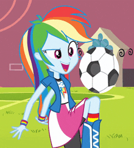
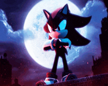
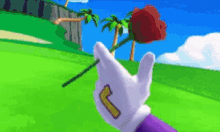

JAX

The Bunny with a Funny Bone
Straight out of the online wonderland known as the Amazing Digital Circus, Jax is one player you don't wanna mess with. Infamous for his self-entertaining pranks and tricks, he knows how to take down the people he loathes the most to thier dignaity. He specilizes in firearms, bowling balls, and manipulation. He never backs down from making funny things happen to people, like completely breaking thier bones with a dodge ball. (He sucks at baseball though.)
RAINBOW DASH
The 20% cooler player
Graduating from the school of Canterlot High, Rainbow Dash was known to be one of the best athletes in her class. Competing in almost every sports event, including the famous Friendship Games. She's known for being the fastest and ruthless of the Mane 7, taking in a lot more head action and wings out her own moves. Despite knowing to have decent sportsmanship and fair play, she isn't one to back down from a friendly competition.
SHADOW THE HEDGEHOG
The ultimate Edge-lord himself!!
Known as the self-proclaimed ultimate life form, Shadow the Hedgehog is a hedgehog unlike any other, including the world-renowned Sonic. After dealing with a loss of loved ones, he goes about protecting the world and showing his dominance above all. This includes sports; he incorporates his fighting and running into any kind of challenge he faces. From racing to Tennis, and even hoverboarding. So you'd better watch out for the ultimate Dodge player who will release a Chaos throw at you.
TOPH BEIFONG

The Melon Lord herself!
She seems small and maybe just a child, but she's well known as an Earthbending Master, competing as a fighter known as the Blind Bandit in Earth Rumble competitions. She's ready for any kind of competition that comes her way; she even has experience with teaching people like the Avatar himself. Making her way to be a formidable member of Team Avatar, saving the world, and protecting everyone from evil. Thus making her quite the team player and the best competitor in dodgeball.
WALUIGI
Mushroom Kingdom's Sexiest Man Alive!!
Fan favorite among many from his respective franchise and often neglected by the big company of Nintendo for his amazing skills and legit cool factor (to the point where he can't get into a certain fighting competition). Waluigi is tough and a bad sports professional because he's acclaimed for showcasing all of his abilities in numerous sports games that can outmatch any foe he sees on the field. As the opposite, more edgy version of the more popular Luigi, he doesn't play nice and is not one to shy away from playing ruthlessly.